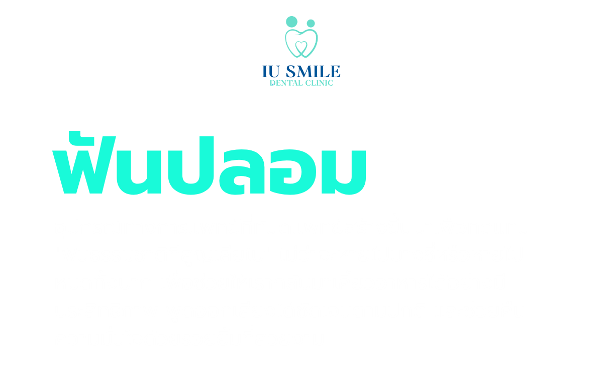
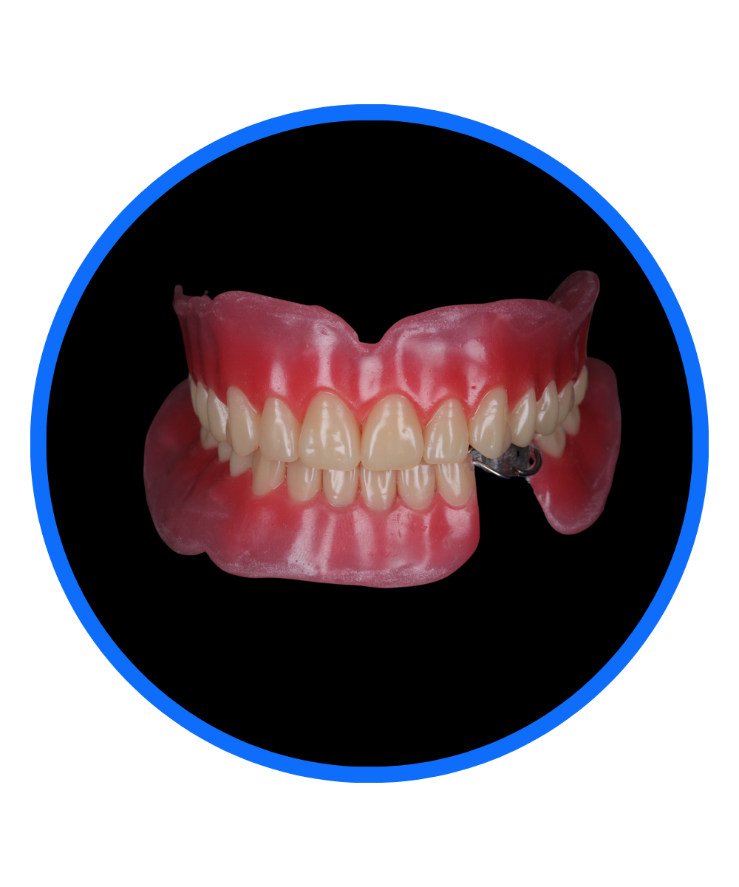
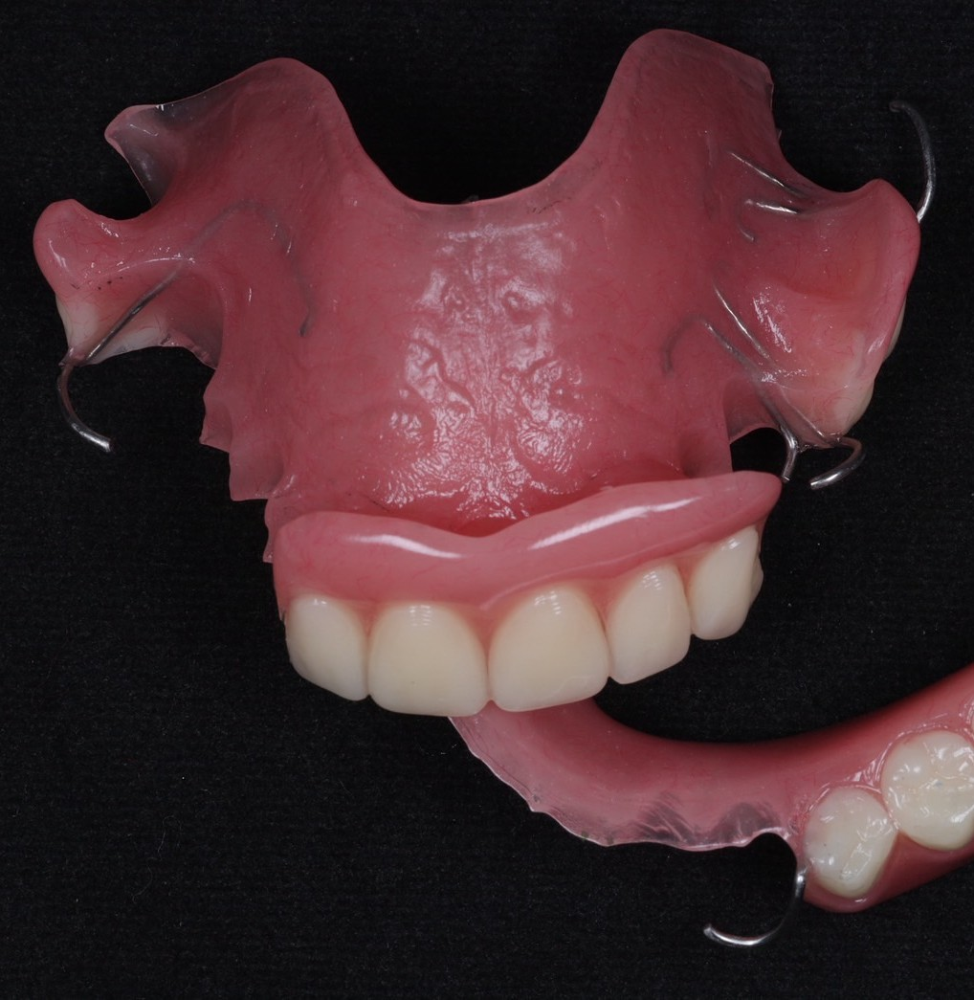
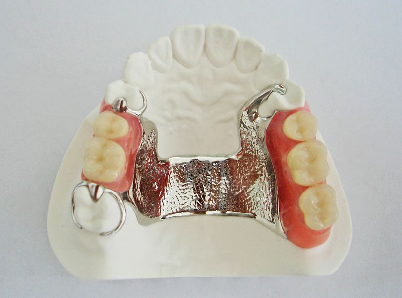
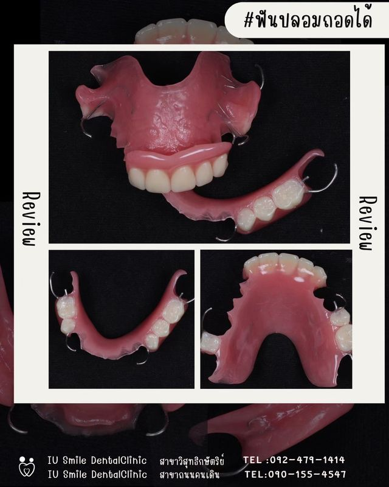
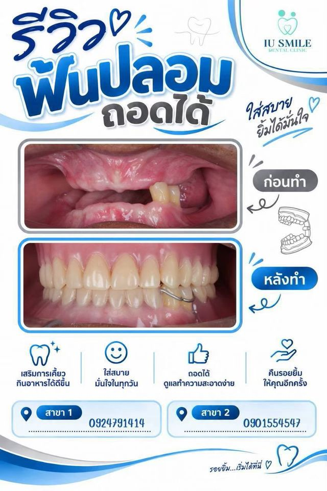
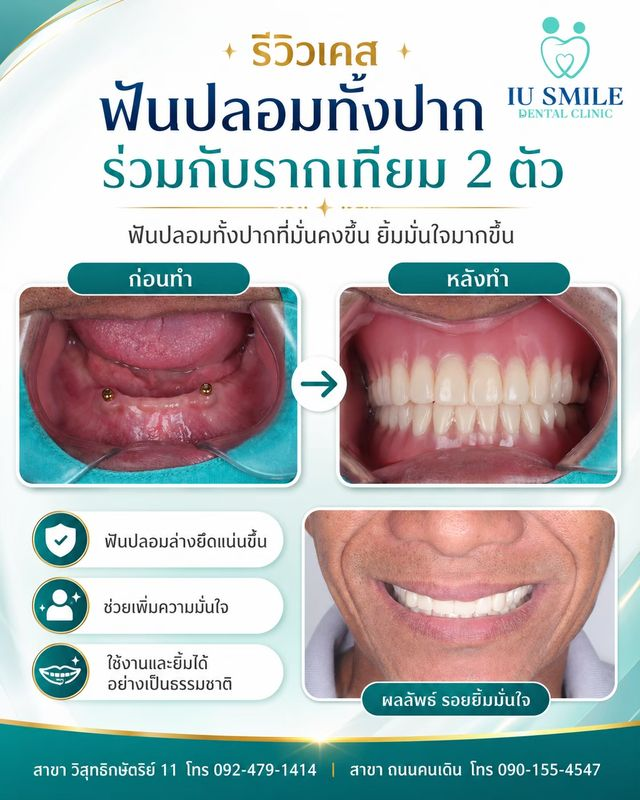
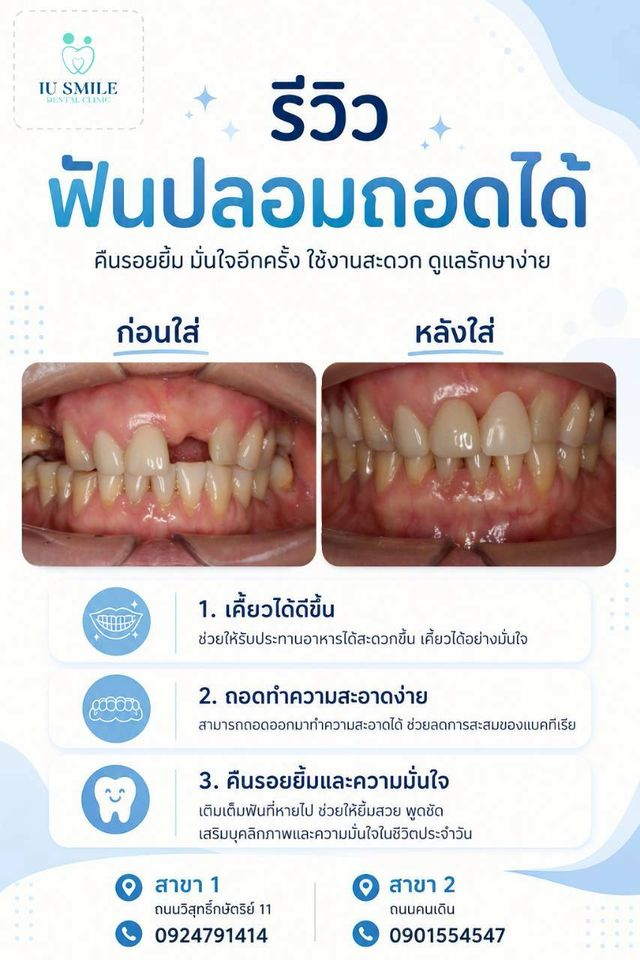
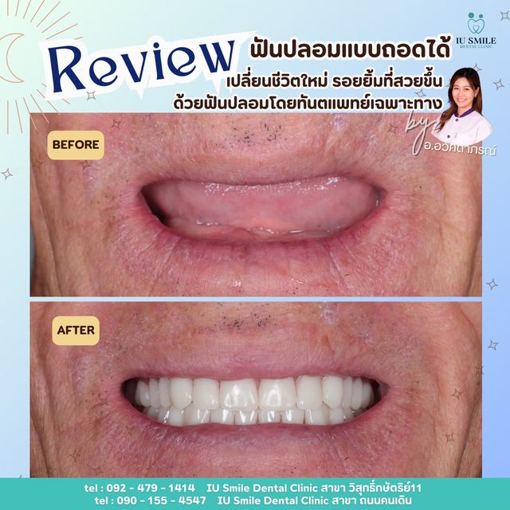
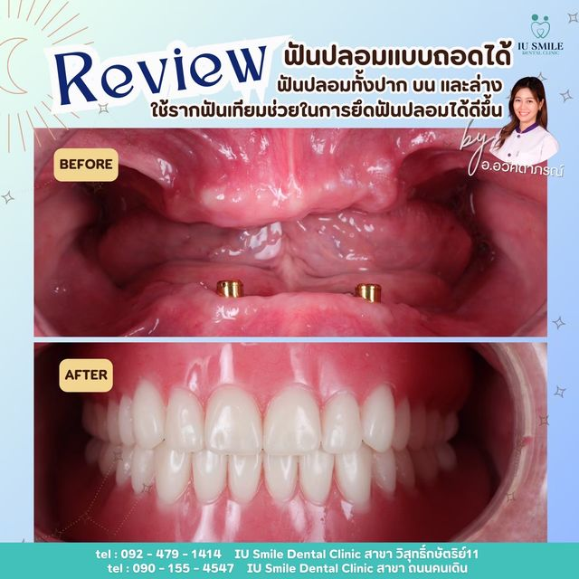

นัดหมายปรึกษา
ทันตแพทย์จะตรวจสุขภาพช่องปาก เหงือก และฟันซี่ที่เหลืออยู่ พร้อมถ่ายเอกซเรย์เพื่อดูสภาพกระดูกรองรับรากฟันและรากฟันที่ซ่อนอยู่ ใต้เหงือกพูดคุยปรึกษาร่วมกันเพื่อเลือกชนิดของฟันปลอมที่เหมาะสมที่สุด (เช่น ฟันปลอมฐานอะคริลิก หรือฟันปลอมฐานโลหะ)
หากมีฟันที่โยกเกินกว่าจะเก็บรักษา ฟันผุ หรือเหงือกอักเสบ จะต้องทำการรักษาหรือถอนออกให้เรียบร้อยก่อนรอให้แผลจากการถอนฟันหายดีและเหงือกยุบตัวเข้าที่ (ใช้เวลาประมาณ 4–6 สัปดาห์) เพื่อให้ฐานฟันปลอมแนบสนิทและกระชับพอดีที่สุด
การพิมพ์ปากครั้งแรก
ทันตแพทย์จะใช้วัสดุพิมพ์ปากใส่ลงในถาดพิมพ์ปากแล้วกดลงบนเหงือกและฟัน
เพื่อจำลองแบบพิมพ์ปากเบื้องต้น นำไปเทปูนปลาสเตอร์ทำเป็น "แบบจำลองช่องปาก"
สำหรับนำไปใช้ห้องปฏิบัติการ (Lab) ในการทำถาดพิมพ์ปากเฉพาะบุคคล
การพิมพ์ปากละเอียดครั้งที่สอง
ใช้ถาดพิมพ์ปากเฉพาะบุคคลที่ทำขึ้นมาสำหรับช่องปากของคุณโดยเฉพาะ
บรรจุด้วยวัสดุพิมพ์ปากที่มีความละเอียดสูง
เพื่อเก็บบันทึกรายละเอียดขอบเหงือก รอยต่อกล้ามเนื้อ และตำแหน่งของฟันที่เหลือได้อย่างแม่นยำที่สุด
ทันตแพทย์จะวัดความสัมพันธ์ของการสบกันระหว่างขากรรไกรบนและล่าง เพื่อให้เวลาใส่ฟันปลอมแล้วฟันบนและล่างสบกันพอดี เคี้ยวอาหารได้ปกติและหน้าไม่ผิดเพี้ยนเทียบสีของซี่ฟันปลอมให้ใกล้เคียงและกลมกลืนกับสีฟันธรรมชาติที่เหลืออยู่ (หรือเลือกสีที่ต้องการ)
เมื่อชิ้นงานเสร็จสมบูรณ์ (ตัวฐานทำจากอะคริลิกหรือโครงโลหะ และซี่ฟันทำจากเรซิ่นหรือพลาสติกคุณภาพสูง) ทันตแพทย์จะนำมาใส่ให้ในช่องปากตรวจสอบความเรียบร้อยและจุดที่อาจกดเหงือกจนเจ็บ พร้อมให้คำแนะนำวิธีถอดใส่ การทำความสะอาด และการดูแลรักษา
การนัดครั้งแรก (หลังใส่ฟันปลอม 1–3 วัน):
ทันตแพทย์จะนัดให้กลับมาตรวจเช็กช่องปากอีกครั้ง
เนื่องจากช่วงแรกที่ใช้งานจริง เหงือกและเยื่อบุช่องปากอาจเกิดการเสียดสีจนเป็นแผลหรือมีจุดกดเจ็บ (Sore
spots)
การปรับแต่งหากมีจุดที่กัดเจ็บหรือฟันปลอมหลวม/แน่นเกินไป
ทันตแพทย์จะใช้เครื่องมือเจียแต่งฐานอะคริลิกของฟันปลอมเล็กน้อย เพื่อให้ใส่สบายและแนบกระชับพอดี
ไม่ระคายเคือง
การติดตามผลระยะยาวทันตแพทย์อาจนัดตรวจเช็กเป็นระยะ (เช่น ทุก 6 เดือน)
เพื่อดูสภาพเหงือกและการสึกหรอของฟันปลอม
เนื่องจากกระดูกขากรรไกรและเหงือกสามารถยุบตัวลงตามกาลเวลา
ซึ่งอาจต้องมีการหนุนฐานฟันปลอม (Relining) ในอนาคตเพื่อให้ยังคงกระชับเหมือนเดิมครับ

ฟันปลอมชนิดนี้เหงือกเทียมทำจากพลาสติก มีความหนาพอสมควรเพื่อให้ความแข็งแรง เหมาะสำหรับผู้ที่ต้องการฟันปลอมในราคาย่อมเยา
ราคาประหยัด เข้าถึงได้ง่าย และหากในอนาคตจำเป็นต้องถอนฟันเพิ่ม ก็สามารถเติมซี่ฟันลงไปได้ง่าย

มีโครงสร้างหลักทำจากโลหะที่มีความบางแต่มั่นคงสูง ส่วนเหงือกแต่งด้วยพลาสติกสีธรรมชาติ
ตัวฐานมีความบางและเบากว่าแบบพลาสติกมาก ทำให้รู้สึกไม่เกะกะในปาก แนบกระชับกับเหงือก ช่วยให้เคี้ยวอาหารได้ดีและมีความทนทานสูง





